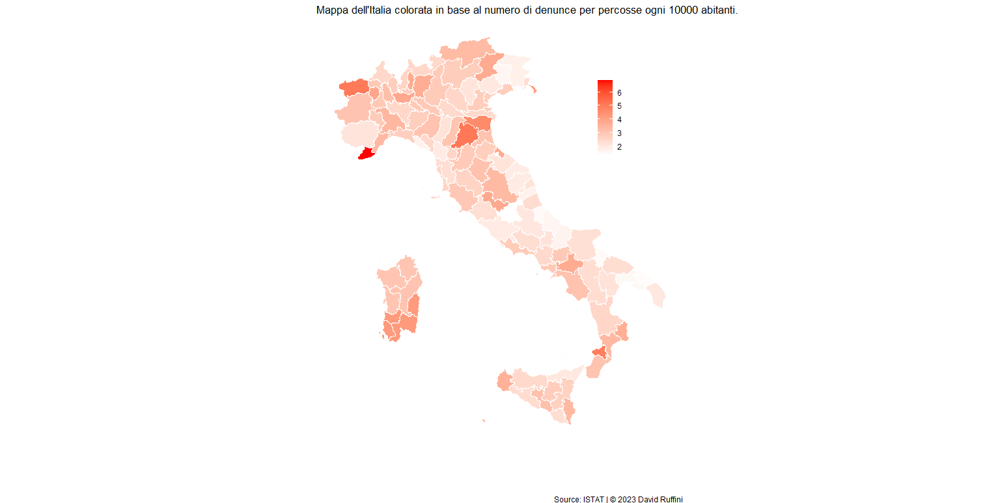

Province e sicurezza
Furti e percosse
Poco più di un mese fa Il Sole 24 Ore ha pubblicato la classifica delle province italiane in cui si vive meglio.
E per quanto riguarda quelle più sicure?
L'approccio utilizzato nella seguente indagine è sicuramente riduttivo e semplicistico, ma potrebbe risultare un buon punto di partenza per analisi più approfondite sul tema sicurezza nelle varie province italiane.
Per misurare il grado di salvaguardia che una città ci offre ho considerato solamente il numero di percosse e quello degli scippi denunciati nel 2022; le prime sono definite dal codice penale, articolo 581, come il delitto ai sensi del quale "Chiunque percuote taluno, se dal fatto non deriva una malattia nel corpo o nella mente, è punito, a querela della persona offesa, con la reclusione fino a sei mesi o con la multa fino a 309 euro." Quindi se si colpisce qualcuno senza provocare lesioni di carattere fisico o psicologico.
Per quanto riguarda lo scippo, questo viene definito dall'articolo 647 bis del codice penale come "furto con strappo", cioè l'azione di chi "si impossessa della cosa mobile altrui, sottraendola di mano o di dosso alla persona". Viene considerato più grave del furto perché lo strappo implica l'esercizio della violenza nei confronti della persona che volente o nolente eserciterà una qualche resistenza.
Iniziando dal tasso di percosse ci rendiamo conto come la provincia di Imperia spicchi su tutte le altre.

Tasso di denuncia per furto nel 2022.
Passando al tasso di furti si nota che la densità abitativa comincia a essere un fattore importante, infatti a primeggiare sono le province di Milano e Roma.

Tasso di denuncia per percosse nel 2022.
Ciao!
Mi chiamo David, sono uno studente di Statistica e in questo sito raccoglierò le mie analisi su argomenti che trovo di mio interesse.
I motivi principali che mi hanno spinto a pubblicare le mie ricerche sono il voler dare ordine a ciò che prima vagava solamente tra le cartelle del desktop e condividere con gli altri i risultati delle suddette indagini.
Se siete in disaccordo, riconoscete un mio errore o per qualsiasi altro motivo volete scrivermi, potete contattarmi nei canali che ho messo in fondo alla pagina.